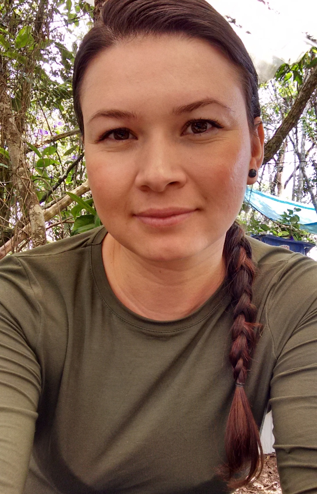

Gloria Cecilia Morales Londoño
Software Developer & Industrial Engineer
Profile
I am a self-taught Software Developer in Stockholm, Sweden, with
experience building websites, web apps and mobile apps. I enjoy
learning, creating and solving problems — my challenge is to try to
learn something new every day. I have a creative mind, great attention
to detail, and I value collaboration and teamwork.
Skills
HTMLCSSJavaScript
Vue.jsNuxt.jsReact
WordPressBootstrapjQuery
SASSGitNode
ExpressMongoDBPostgreSQL
REST APIs
Experience
Aug 2021 — Jan 2025
Frontend Developer
Happy Socks AB, Sweden
Designed, built and maintained component-based web applications,
with a strong focus on performance, usability and accessibility.
Main tools: Vue.js, Nuxt.js, TypeScript, Storyblok, Vercel.
Apr 2019 — Aug 2021
Frontend Developer
Greater Than AB, Sweden
Developed, maintained and modified websites and mobile
applications. Built pixel-perfect responsive pages, integrated
back-end services, and tested applications to find and fix bugs.
Oct 2015 — Jan 2017
Inventory Control Assistant
Coopidrogas, Colombia
Documented daily inventory, maintained stock rotation and
expiration dates, monitored processes, registered purchase
records, and ran statistical analysis.
Education
Jan 2025
Backend Developer
Sundsgårdens folkhögskola, Helsingborg
Dec 2018
Software Development, Java & Media Applications
KTH University, Sweden
Dec 2012
Industrial Engineer
Universidad Tecnológica de Pereira, Colombia